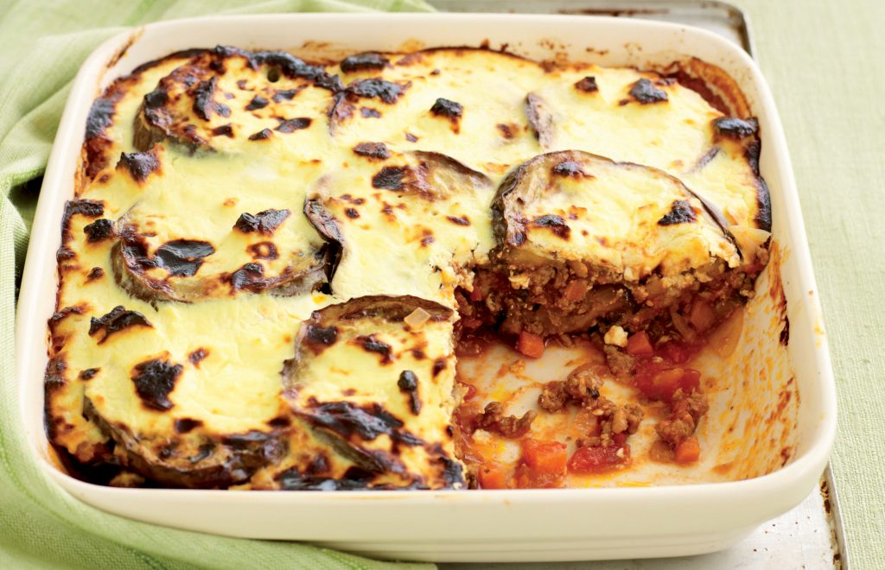

Mousakka Recipe

Moussaka is an aubergine or potato-based dish, often including ground meat, which is common in the Balkans and the Middle East, with many local and regional variations. The modern Greek variant was created in the 1920s by Nikolaos Tselementes.
List of Ingredients
- 4 medium-sized potatoes
- 3 tbsp olive oil, plus extra for brushing
- 1 red onion, sliced
- 2 garlic cloves, crushed
- 1 tsp mixed spice
- 500g carton passata
- 2 aubergines, cut into slices
- 300ml tub crème fraîche
- 140g cheddar, grated
Steps
- Boil the potatoes whole for 20 mins or just until tender. Drain and allow to cool.
- Return the pan to the heat and add 2 tbsp olive oil and the onion. Cook until softened, then add the lamb. Fry the mince for 5 mins or until cooked through and starting to char. Add the garlic and spice, and stir in the passata. Bring to a simmer, then season to taste, take off the heat and set aside until needed.
- Heat oven to 220C/200C fan/gas 7. Warm a griddle pan over a high heat and brush a little oil over the aubergines. Grill for 2-3 mins each side or until char lines appear. You may have to do this in 3-4 batches.
- Once cool enough to handle, cut the boiled potatoes into thick slices. Put 1 tbsp oil in the base of a deep ovenproof dish and start with a layer of potatoes, then aubergines, a sprinkling of seasoning, then a layer of the lamb mixture. Repeat until all the mixture is used up, ending with a layer of aubergines. Spread the crème fraîche over the top and scatter with the cheese. Put in the oven for 10 mins or until the cheese is golden.